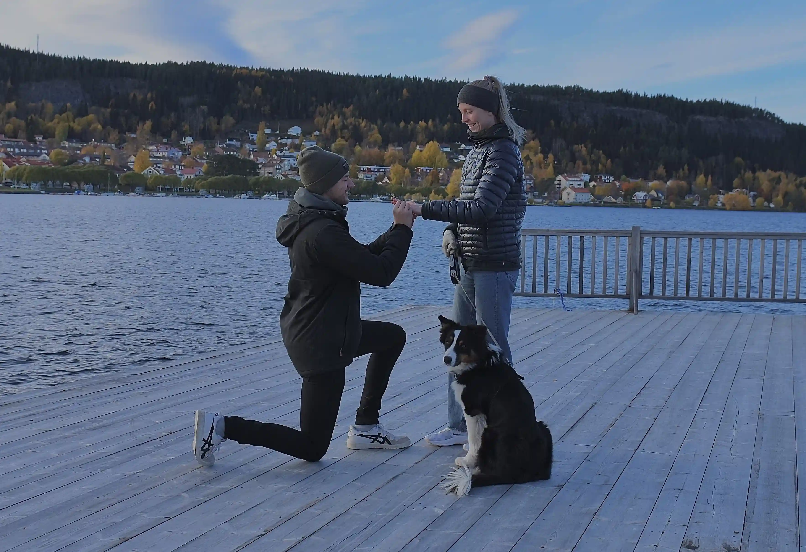
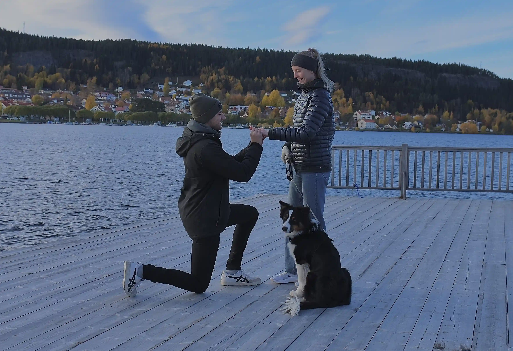
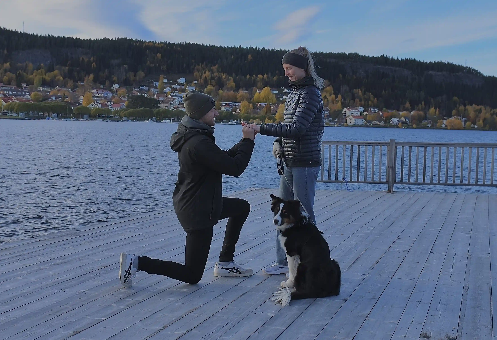

Bröllop - Hochzeit 2025
Anna & Ruben
 

Bröllop - Hochzeit 2025
Anna & Ruben

Anna och Wilhelmina träffades av misstag. Anna 3 år sprang in i grannhuset och skulle leka med David som var jämngammal. Nedför trappen steg en Wilhelmina, och Anna sa ”men, du är ju inte David!... Ska vi leka?”. Från den dagen var Anna och Wilhelmina bästa vänner.

Fanny gick i Annas parallellklass på Smedslättsskolan i Äppelviken. En dag i tredje klass ville Anna leka med Fanny och bjöd med henne hem. Fanny och Anna gömde sig på vinden och spelade kort. Sedan dess var Fanny och Anna vänner och de spelade basket i samma lag i många år. Fanny och Annas favoritaktivitet tillsammans var att spela Sims!

Fotbollstalangen Elsa rekryterades till Annas basketlag i andra klass. Under Elsa och Annas uppväxt spenderade de hundratals timmar tillsammans i baskethallen. Många av timmarna var de ensamma kl 7 på morgonen innan skolan började, för att bli bäst på basket. Elsa och Anna har pushat och stöttat varandra i många år i basketen, där Elsa till och med varit Annas privata tränare under sommarmånaderna. Elsa och Anna har tillsammans varit med om blod, svett, tårar, skratt och till och med spyor. Elsa och Anna har också arrangerat basketläger i Nigeria för barn, för att de vill ge tillbaka för allt vad basket gett dem. Idag är Elsa coach i Norrköping Dolphins medan Anna lagt basketskorna på hyllan. Men det är genom basket som de funnit varandra och som för resten av deras liv kommer vara en het diskussionspunkt.

Rakel är den knasigaste men klokaste människan Anna känner. Rakel tar fram de knäppaste sidorna hos Anna samtidigt som hon ger kloka råd och inspiration. Anna och Rakel träffades när Anna flyttade till Norrköping för att spela basket i Norrköping Dolphins, där Rakel redan spelat sen flera år tillbaka. Anna och Rakel blev snabbt bra vänner och spenderade mycket tid i baskethallen, på cykeln till och från träningarna, över kaffe och pluggmys. Rakel och Anna träffas inte lika frekvent längre, men utbyter än idag både skratt och djupa reflektioner om livet.

Frida är Annas storasyster, som ibland känns som samma person som Anna. De är den knasiga delen av familjen, och båda gillar att bjuda rejält på sig själva. Helst ska det vara hyfs som normala människor hade skämts för. Frida lurade i Anna jordgubbsylt och godis när hon var liten, för att det skulle göra att Anna till prinsessa. Idag har en prins vid namn Ruben fångat Annas hjärta, så det måste funkat!

Klara är Annas lillasyster, som är den mognaste och lugnaste av oss i syskonskaran. Klara är även basketproffs och har spelat utomlands och spelar i sveriges landslag. Utanför planen är hon sofistikerad, jordnära och organiserad. Klara blev besparad på de knasiga generna och fick det lugnet som storasystrarna inte tog till sig.
Olle
Erik
Andreas
Johan
Leo
Bordplacering


Skapad av: Fanny Falck